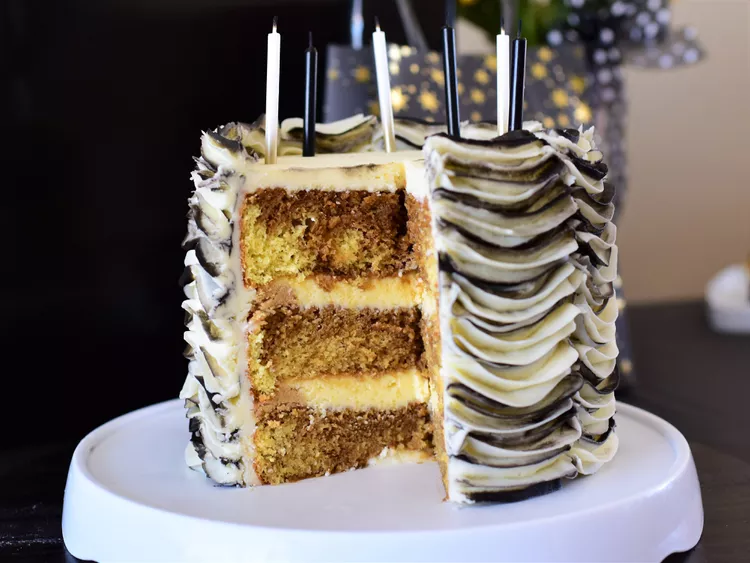

Ingredients
For Cake
- 1 (15.25 oz) package moist white cake mix
- 1 cup water
- 3 large egg whites
- ⅓ cup vegetable oil
- 1 tsp instant coffee powder
For Coffee Syrup
- ¼ cup coffee
- 1 tbsp coffee flavored liqueur
For Frosting
- 2 cups heavy cream
- ¼ cup confectioners' sugar
- 2 tbsp coffee-flavored liqueur
For Garnish
- 2 tbsp unsweetened cocoa powder
- 1 (1 oz) square semisweet chocolate
Instructions
- Preheat oven to 175°C
- Grease and flour three 9-inch pans
- Beat cake mix, water, egg whites, and oil in a large bowl with an electric mixer on medium speed until well combined (~2 minutes)
- Divide 2/3 of the batter between 2 prepared pans
- Stir instant coffee into remaining batter and pour into the remaining prepared pan
- Bake for around 23-28 minutes or until a toothpick inserted into the center of cakes comes out clean
- Cool cakes in the pans for 10 minutes, then turn out onto a wire rack to cool completely
- To make the syrup, combine brewed coffee and coffee liqueur in a measuring cup and set aside
- To make the filling, beat mascarpone, confectioners' sugar, and coffee liqueur with an electric mixer on low speed until smooth
- Cover with plastic wrap and place in the fridge to keep cool
- To make the frosting, beat cream, confectioners' sugar, and coffee liqueur with an electric mixer on medium-high speed until stiff
- Fold 1/2 cup frosting into chilled filling until combined
- Store frosting and filling, covered, in the refrigerator to keep cool
- To assemble the cake, place 1 plain cake layer on a serving plate
- Using a thin skewer, poke holes in cake (~1 in apart)
- Pour 1/3 of the coffee syrup over cake, then cover with 1/2 of the filling
- Top with coffee-flavored cake layer then poke holes in cake
- Pour another 1/3 of the coffee syrup over cake and cover with remaining filling
- Top with remaining cake layer then poke holes in cake
- Pour remaining coffee syrup on top
- Spread sides and top of cake with frosting
- To garnish, lightly dust top of cake with cocoa powder
- Run a vegetable peeler down the edge of chocolate square to form curls
- Scatter chocolate curls over cake
- Chill in the fridge for at least 30 minutes before serving